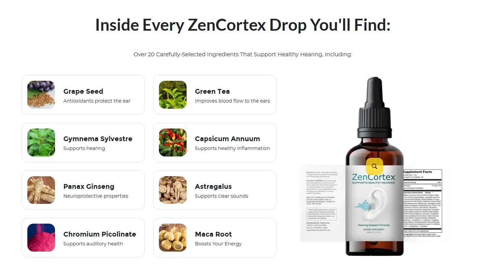

Top Researchers Reveal The Real Root Cause Of Tinnitus & Hearing Loss
This Simple "Morning Drop" Ritual Could Restore Your Silence...

×
Cookie Policy
This website uses cookies to personalize content and ads, provide social media features, and analyze our traffic. By clicking Accept, you agree to the use of cookies. For more information, please visit our Cookie Policy.